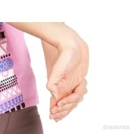

오래 앉아 있거나 장시간 사무 작업을 하는 경우, 앉은 자세를 유지하기 위한 근육(예를 들면 척추기립근)이나 팔, 어깨 근육에 피로가 쌓이게 된다. 피로의 누적은 자세의 변화와 근육통을 동반하는 근골격계 질환을 유발하기 때문에 매일 시간이 날 때마다 스트레칭을 통하여 근육의 피로를 풀어주는 것이 좋다. 특히 의자에 앉은 채로 스트레칭을 실시하는 동작들은 별도의 공간이 필요하지 않으며, 많은 시간을 투자하지 않고서도 운동효과를 얻을 수 있다.
1. 오른쪽 손바닥이 앞을 향하게 하고 팔을 전방으로 쭉 편다.손끝이 바닥을 향하게 하고, 왼손으로 오른손을 잡아 부드럽게 당기도록 한다.
2. 팔꿈치는 곧게 편 상태를 유지한다.반대쪽도 동일하게 수행한다.